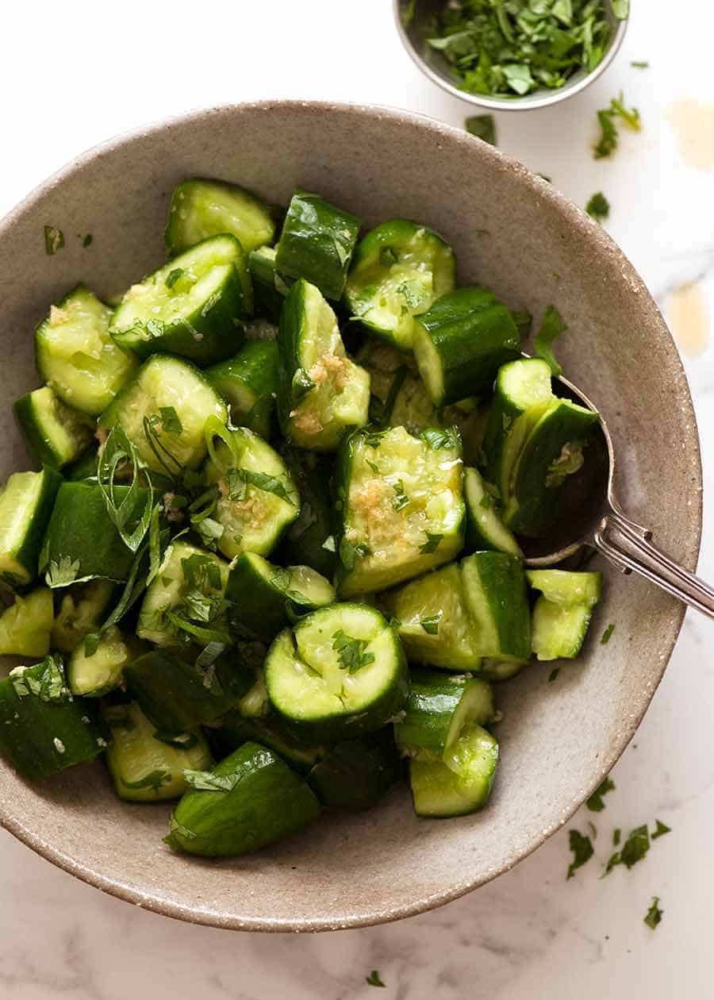

Smashed Cucumbers

Flavourful cucumber salad that easily pairs with any Asian meal
Take all of your carefully controlled rage out on smashing the cucumber.
Ingredients
- 500g cucumbers (4 medium, or 2 long cucumbers)
- 3/4 tsp salt
- 2 tbspn coriander/cilantro
- 1/4 cup shallots/green onions
Dressing:
- 1 1/2 tbsp rice wine vinegar
- 2 tsp sesame oil
- 1 1/2 tsp ginger, grated
- 2 tsp soy sauce
- 1/2 tsp sugar
Steps
- Bash the cucumbers lightly until they split open at the sides (like your sanity) using something heavy like a rolling pin, pestle or can.
- Cut in to 2.5cm chunks then place in a bowl.
- Sprinkle with salt, toss, leave to sit for 20 minutes to think about what it's done.
- Drain excess liquid in the bowl generated from tears of the cucumber.
- Mix dressing ingredients together then mix with cucumbers and slice shallots. Serve immediately, does not store well.
Return home
Made by LeafSapien copyright 2023